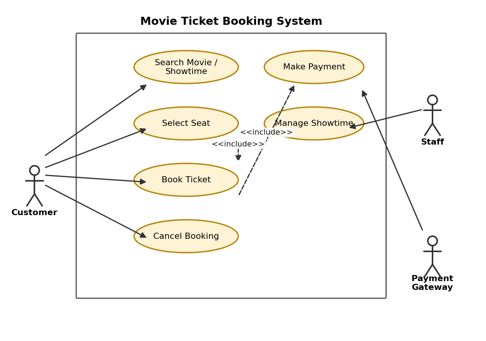
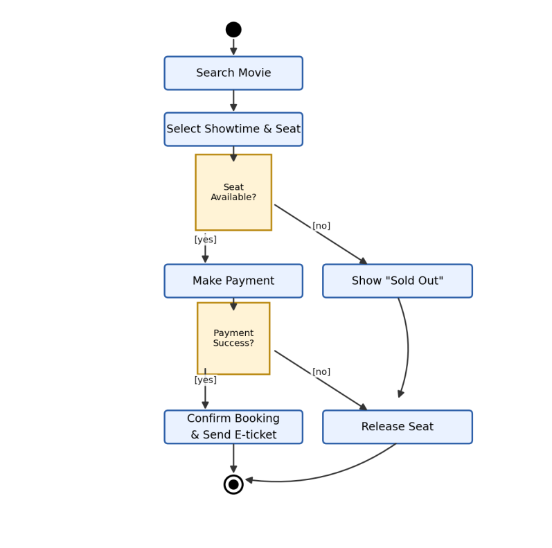

← กลับไปหน้า Portfolio
Table: hw06_uml_diagrams
HW6: UML Diagrams — Movie / Concert Ticket Booking System
การบ้านชิ้นนี้ออกแบบแผนภาพ UML 6 รูปแบบ สำหรับระบบขายตั๋วภาพยนตร์/คอนเสิร์ต (Movie / Concert Ticket Booking System) เพื่อฝึกมองระบบเดียวกันจากหลายมุมมอง ทั้งเชิงพฤติกรรมและเชิงโครงสร้าง

Use Case Diagram — แสดงการปฏิสัมพันธ์ระหว่าง Actor กับระบบ โดย Customer สามารถค้นหารอบฉาย เลือกที่นั่ง จองตั๋ว และยกเลิกการจองได้ ส่วน Staff จัดการรอบฉาย และ Payment Gateway ทำหน้าที่ยืนยันการชำระเงิน

Class Diagram — แสดงโครงสร้างของระบบในรูปแบบคลาส พร้อมแอตทริบิวต์ เมธอด และความสัมพันธ์ระหว่างคลาส Movie, Showtime, Seat, Customer, Booking และ Payment
แผนภาพอื่น ๆ ในไฟล์ฉบับเต็ม
- Sequence Diagram — ลำดับการส่งข้อความตั้งแต่ลูกค้าเลือกที่นั่งจนถึงการชำระเงินผ่าน Payment Gateway
- Activity Diagram — ขั้นตอนตั้งแต่ค้นหาภาพยนตร์ เลือกที่นั่ง ชำระเงิน จนถึงยืนยันการจอง
- State Machine Diagram — วงจรสถานะของที่นั่ง ตั้งแต่ Available, Locked, Booked จนถึง Cancelled
- Component Diagram — โครงสร้างสถาปัตยกรรมของระบบขายตั๋วในภาพรวม